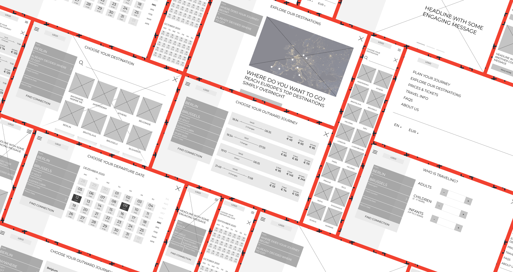

Project Background
Objectives
City Night Line is used as an exercise for how to work within an existing, iconic brand in the transactional realm of railways. The goal was to design a responsive website that covers the main functionality: search for a connection and booking of tickets. Redesign the brand with a more modern feel, keeping the essence of it still alive.
Role
User Research, UX and UI Design
Timeline
80h
Discover
Market Trends, Competitor Analysis, User Interviews
Night trains have long served as a means of transportation to travel
long distances in reasonable amounts of time. But since the advent
of affordable air travel, the number of night trains has fallen.
Operators find themselves in the increasingly uncomfortable position
between high-speed rail services, low-cost airlines, and low-cost
bus operators.
I started the project with market research to learn about current
trends and the future of transportation. Additionally, I analyzed
possible competitors.
To gain insights about people traveling with night trains, I
conducted a survey. From 40 survey responses, 73% of respondents
stated to travel at least once a year by train. 46% (14 people) of
them answered that they traveled already by night train.
I used an affinity map to group the responses.

The following conclusions are drawn from the survey.
Insights
- travelers choose night trains mostly to save time
- experience and sustainability play a smaller role
- the price is a significant factor for most travelers when booking train tickets, followed by details of the journey like the duration and the number of changes
- 85% of travelers are using night trains for leisure trips
- 64% are traveling alone, followed by 28% with family and 21% with a travel group
- while 21% state they are booking tickets with via app or respectively buy their ticket at a station, 93% purchase their tickets per website mostly using a desktop computer (71%)
Needs
- passengers need an easy way to find tickets for the best price
- for frequent travelers, it is essential to have a degree of service offerings, f.e. the possibility to cancel or reschedule their tickets
Pain Points
- intransparent pricing, f.e. when it is not clear upfront that service fees are applied or when there are different prices for the same comfort category
- it is annoying when it is necessary to buy tickets from different train operators, or knowledge of the railroad network is needed to find the best connections
Define
Personas, Sitemap, User Flow
In the next step, I clustered the gathered information to find patterns. At first, the similarities between all travelers seemed to lead to only one persona. But on a closer look, the differences between frequent travelers and the occasional traveler were too distinct.


Eventually, I split them up to create two personas. Please meet Emma Anderson and Paul Novak.


For the definition of the sitemap, I conducted an open Card Sorting. The results of this exercise were quite ambiguous. The users’ agreement where to place menu items was not conclusive enough to create a sitemap. Therefore I conducted a second round of Card Sorting. Based on the first results, I provided categories to the participants, but allowed the creation of own categories if necessary. The results turned out more distinct to create a sitemap.
The most important task for the personas is to purchase tickets. Thus I modeled the user flow accordingly.
Design
Sketches, Wireframes, Moodboard, Logo & Wordmark, Style Tile, Responsive UI Design
Before I started creating wireframes in the digital realm, I scribbled several ideas for the screens in a Crazy Eights activity. This exercise helped me to ideate and eventually create the wireframes.

With the wireframes at hand, I created a low-fidelity prototype to
evaluate the user flow.
I conducted a remote usability test with two tasks. The two
scenarios model the main goals of the personas:
- booking a ticket to a specific destination with flexible dates
- researching a possible destination with a set date range and budget
While the first assignment worked as intended, the performance of
the second one was rather unsatisfying. The task had a bounce rate
of 50%, while the other 50% of users could only indirectly finish
the mission. Interestingly all users who indirectly finished the
first scenario began browsing on the "Explore our destinations"
page. They rated their satisfaction with the booking process as high
(on average 8 on a scale from 0 to 9).
I used a Feedback Grid to gather and organize the user feedback.

The feedback helped me to iterate over the wireframes. Validating assumptions helps to make informed decisions. Testing in an early stage of a project has the benefit that changes are easier to make and it can prevent going in the wrong direction.
With the user flow in place, I focused on the branding.
First, I gathered ideas and inspirations on a mood board. For the
color palette, I took inspiration by neon lights that pass by the
windows when traveling by night. Yet, the colors are intended to
have a modern, luxurious feel.
Logo and wordmark are an essential part of a brand. Since City Night Line was an actual operator, I wanted to revise the old logo and keep its essence.
Deliver
UI Kit, Prototype
Iterate
User Testing, Second UI Design Iteration
tristique, ex velit aliquet lorem, sed tempor lacus sapien in dolor. Proin aliquam ligula nunc, vitae dignissim ligula semper vel. Aliquam tempor lacus arcu, in dictum neque scelerisque eget. In hac habitasse.